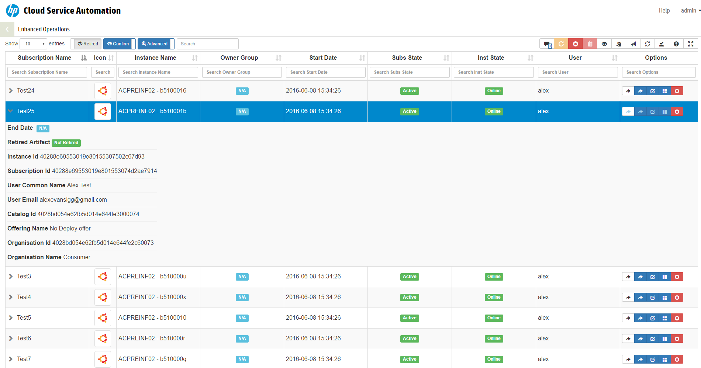

CSA Operations Enhanced
Current Version 0.06
This plugin allows a Super Admin to manage Subscriptions across multiple users and organisations efficiently.

The following features are exposed in this plugin with the aim of enhancing the CSA Operations experience
- Global (Greedy) field filter – Single Search field across all exposed columns.
- Individual Field Search filters - (e.g when you need to filter on a specific columns only)
- Sorting on any field.
- Individual Cancel/Delete/Resume Subscriptions - without the annoying drill down into the subscriptions
- Modify Subscription Page Link - Requires Consumer Admin Session opened in MPP in advance.
- Service Instance Page Link - Requires Consumer Admin Session opened in MPP in advance.
- Direct link to Service Topology View
- Direct Link to standard Operations tab Overview
- Export Filtered Subscriptions to Clipboard (tab separated) or as Excel
- Optionally Expose Design bespoke Properties_ from Service Component Model (e.g. IP Address of NIC components or Hostnames of Server Components)
- Display Retired Subscriptions - Subs that have been deleted from CSA and no longer visible in the standard operations console
- A local cache of the individual user preferences for configuration of the tool.
- Fullscreen mode - For utilising more screen space.
CSA Compatability Matrix
| CSA Version | Database | CEO Tested |
|---|---|---|
| 4.2x | MSSQL | Yes |
| 4.2x | ORACLE | Yes |
| 4.2x | POSTGRES | Yes |
| 4.5x | MSSQL | Yes |
| 4.5x | ORACLE | Yes |
| 4.5x | POSTGRES | Yes |
| 4.6 | MSSQL | Yes |
| 4.6 | ORACLE | Yes |
| 4.6 | POSTGRES | Yes |
| 4.7x | ? | ? |
Installation Instructions
- Create the folder custom-content (if it doesnt allready exist) in directory /jboss-as/standalone/csa.war
-
Extract the Plugin contents into the custom-content folder, observe the correct folder structure in the custom-content folder as below:
File Contents / Folder Structure
- CSA-Enhanced-Operations/assets/css/bootstrap-toggle.css
- CSA-Enhanced-Operations/assets/css/bootstrap-toggle.min.css
- CSA-Enhanced-Operations/assets/css/bootstrap.min.css
- CSA-Enhanced-Operations/assets/css/dataTables.combined.css
- CSA-Enhanced-Operations/assets/css/dataTables.combined.min.css
- CSA-Enhanced-Operations/assets/fonts/glyphicons.*
- CSA-Enhanced-Operations/assets/js/bootstrap-toggle.js
- CSA-Enhanced-Operations/assets/js/bootstrap-toggle.min.js
- CSA-Enhanced-Operations/assets/js/bootstrap.min.js
- CSA-Enhanced-Operations/assets/js/dataTables.combined.js
- CSA-Enhanced-Operations/assets/js/dataTables.combined.min.js
- CSA-Enhanced-Operations/assets/js/jquery.js
- CSA-Enhanced-Operations/assets/js/jquery.min.js
- CSA-Enhanced-Operations/css/CSA-Enhanced-Operations.css
- CSA-Enhanced-Operations/js/CSA-Enhanced-Operations.js
- CSA-Enhanced-Operations/pages/getSubs.jsp
- CSA-Enhanced-Operations/pages/action.jsp
- CSA-Enhanced-Operations/index.jsp
- CSA-Enhanced-Operations/README.md
- CSA-Enhanced-Operations/setup.json
-
Add the corresponsding entry to the csa.war/dashboard/config.json depending on the installed csa version. (inside main.tiles array or in sub panel see Configuration guide if unsure how to manipulate this file)
CSA 4.2
{ "id": "CSA-Enhanced-Operations", "name": "CSA-Enhanced-Operations", "description": "CSA-Enhanced-Operations_description", "enabled": true, "style": "custom-tile-header", "target": "iframe", "data": "/csa/custom-content/CSA-Enhanced-Operations/", "helptopic": "console_help", "roles": ["CSA_ADMIN"] }CSA 4.6
{ "id": "CSA-Enhanced-Operations", "name": "CSA-Enhanced-Operations", "description": "CSA-Enhanced-Operations_description", "enabled": true, "style": "custom-tile-header", "type": "iframe", "url": "/csa/custom-content/CSA-Enhanced-Operations/", "helptopic": "console_help", "roles": ["CSA_ADMIN"] } -
Open the file csa.war/dashboard/messages/common/messages.properties and location section entitled:
# Page titles and descriptions, used for the dashboard tiles and for navigation viewsAdd the following entries
CSA-Enhanced-Operations=Enhanced Operations CSA-Enhanced-Operations_description=This experimental feature allows a Super User to Manage Subscriptions across all organizations efficiently (Experimental)
-
To fix the CSA styling on the dashboard you can add the following css snippet to the end of the file csa.war/dashboard/css/base.css to make the Tile Title fit better.
.tile h3 { white-space:inherit; font-size:1.4em; }
-
Configure the settings in csa.war/custom-content/CSA-Enhanced-Operations/setup.json
Name Description Default MPP_HOST The url of a MPP instance, Required for Consumer Admin Links https://localhost:8089/ DATA_URL The path to the URL for retrieving the Subscriptions pages/getSubs.jsp ENABLE_CONSUMER_ADMIN_LINKS Set as false to disable direct links to Manage Subscriptions as Consumer Admin true ENABLE_CANCEL_LINKS Set as false to disable Cancel subscription functionality true ENABLE_RESUME_LINKS Set as false to disable resuming paused subscription functionality true ENABLE_DELETE_LINKS Set as false to disable deleting offline subscription functionality true REQUIRE_CONFIRMATION Set as false to determine the default behaviour regarding confirmation prompts true SHOW_RETIRED Choose weather to include retired artifacts by default false USE_FIXED_HEADER Set as false to disable the fixed header behaviour true CACHE_NAME The name of the http cookie used for storing user preferences CSA-E-O-Conf CONFIG_CACHE Integer representing the number of days end user configuration remain in browser cache 5 DEFAULT_DISPLAY_LENGTH Set the Default number of rows should be displayed, possible values 10,25,50 or ALL 25 SEARCH_TERM The default value set in the Datatables search field "" ADVANCED_SEARCH The default setting for the individual column search field true COLUMNS An object array of columns show in the datatable, the order here is the default order the columns show in, the titles represent the column headers, the data values should not be changed, add/remove the call "none" to move the column into the child row (drill down). -
Update user partial path located on line 16 of the index.jsp depending on csa version.
CSA 4.2
<%@include file="/components/pages/partials/user.jsp" %>
CSA 4.5+
<%@include file="/html-lib/pages/partials/user.jsp" %>